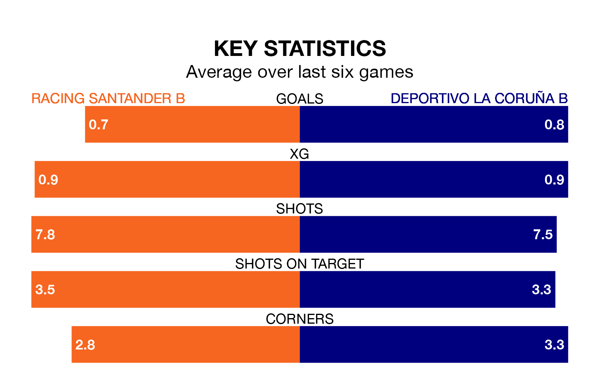

Racing Santander B host Deportivo La Coruña B on Sunday at the Estadio Municipal in Segunda División RFEF Group 1.
In their last league match, on January 13, Racing Santander B lost to Ourense CF 3-0 away.
Deportivo La Coruña B won, 1-0 at home against Real Avilés on January 14.
With 27 goals in 18 games so far this season, Racing Santander B are the league's second-highest scorers with 1.5 goals per game. And they are conceding fewer than average, letting in 20 goals at a rate of 1.1 per game.
Deportivo La Coruña B, meanwhile, are average scorers, with 1.2 goals per game. They have also conceded 1.2 goals per game.
The hosts are in disappointing form in Segunda División RFEF Group 1, with one win and two draws from their last six games.
With two wins and a draw over that period, the away team's form is slightly better – they have taken seven points from 18, compared to Racing Santander B's five.
Racing Santander B are sixth in the table after 18 games, of which they have won seven and drawn six, earning 27 points.
Deportivo La Coruña B are seven places behind the home side in 13th, with five wins and six draws putting them on 21 points.
Updated: 13:09 (UTC), 17/01/24